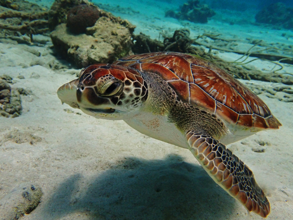
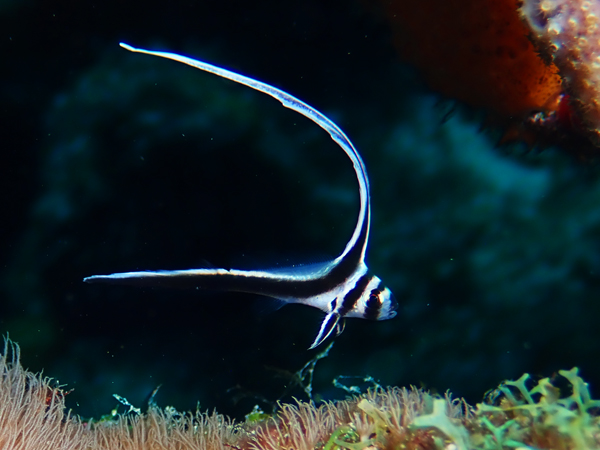
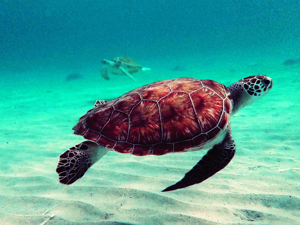
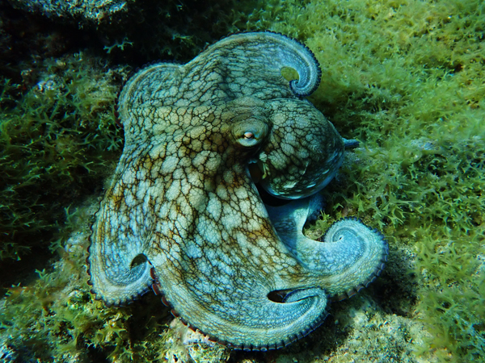
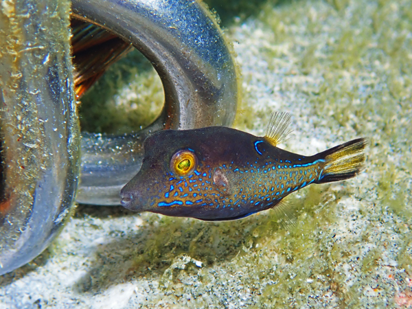
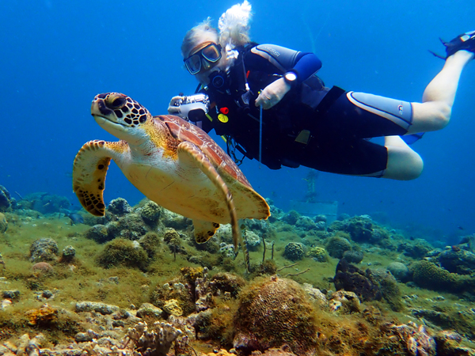
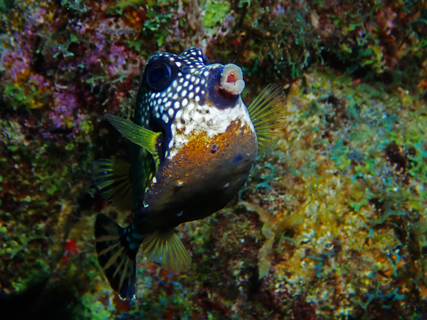

Monday 1st June We got a taxi from Kingsclere just before 3pm and were at the station in Basingstoke by about 3:15. The 15:11 train to Southampton was late so we were able to catch it. We got to the airport at about 4.
We had booked a night at the airport Premier Inn. We had not really planned to stay at the airport but the hotel was very cheap so we thought we may as well. It was only a five minute walk from the station so we were checked in by about 4:15.
We had the option of going into Southampton for a few drinks but instead decided to go to Eastleigh which was only three minutes away by train. We got a train at about 5:30 and walked first to Steam Town Brew Co. a few minutes away. This was an excellent place with a good range of their own beers. We had three drinks in there. We probably would have had another but there was a break in the rain when we had finished our drinks so we walked back to the Wetherspoons opposite the station.

The only tables we could find in this pub were reserved for people joining in the quiz. We decided we may as well take part and it all proved to be quite enjoyable. We ended up coming third behind two teams of five or six people. We ate while doing the quiz and left at about 10:30. We got the train back and had a couple more glasses of wine in the room before bed.
Tuesday 2nd June We were awake by about 6:30, had showers and checked out. We were in the airport a few minutes later. There were no queues at check in or security so we were sat in the departure area by about 7:15. Our flight to Amsterdam left on time at 9:05.
We had two hours in Schiphol before our 13:25 flight to Curaçao. We were off the plane fairly quickly and were taken by bus to the terminal. We headed straight to Taste from the Lowlands which is now called "The Butcher" for some reason. It was exactly the same as it has always been so we were able to have our usual beers as well as a portion of bittenballen and cheesy chips.

We had a ten minute walk from the bar to the departure gate. We boarded by 1pm and took off on time. The flight was totally full but was all OK. We had a few bottles of wine each and the nine and a half hour journey went reasonably quickly. We landed about ten minutes early at 5pm local time. We got through immigration more quickly than expected but had a bit of a wait for our luggage. We were through the airport by 6.
We were met in the arrivals area by "Papa", who drove us to All West Apartments about 40 minutes away. He showed us where the dive centre was and stopped at a mini-mart for us to buy a few things for tonight. When we arrived at the apartment, our rental truck was waiting outside.
The apartment is superb. Not only does it have everything we need, but it has a large balcony with excellent sea views. The area we are in is a bit isolated but we are happy to spend most of the next week self-catering if we need to. We will move into Willemstad, which should be more lively for five nights next week.
We were both worn out by the time we arrived. We had drank more than planned last night and the five hour time difference did not help. We did a bit of unpacking and then had sandwiches on the balcony before an early night.
Wednesday 3rd June We were both awake before 6 this morning. As soon as I got up, I spotted our first turtle of the trip swimming in the shallows beneath the balcony.
We went straight out for a walk round. We found the dive room and went through it to get to the front of the apartments from where there is a set of steps down to the beach. We walked along the beach to Playa Piskadó. Here there is a small pier where fisherman clean their fish and feed turtles with the waste. There were several turtles swimming around the pier as well as a couple of photogenic pelicans. After watching these for a while, we returned to the balcony for breakfast.
We had decided that we would have a day off today and start our diving tomorrow. We had a few things to sort out and thought it would be good to find our way round while recovering from the journey out here.
We went out in our truck at about 9:30. We went first to the dive centre to check-in but most of the paperwork had already been done so we did not really need to do anything else. We told them we would come and collect our weight belts when we start diving tomorrow.

From there, we drove back the way we had come yesterday to a bigger supermarket. As we will be mostly self-catering for the next week, we needed quite a few things and the local mini-mart was not really up to what we wanted. We were able to stock up on most of what we needed and returned to the apartment. After unloading everything, I went for another walk along the beach and then managed to find Roxy. There is no reception here but Roxy is the cleaner who also seems to be our only point of contact for just about everything else. We sorted out the paperwork for the truck with her and tried, unsuccessfully to pay the remainder of our bill.
The rest of the day was spent lazing around in the apartment or on the balcony while also charging batteries and generally getting everything ready for tomorrow. We did both go into the sea at about 4ish. Roz went for a swim while I took a few photos of the turtles that were still by the pier.
We cooked mini burger type things for tea but did not do a lot else for the rest of the evening.
Thursday 4th June We were awake early again and had breakfast on the balcony. We had to go back to the dive centre to collect our weight belts and waited until 8:30, the time the boat leaves for the morning. We got our weights and paid our bill, then dived in front of the dive centre at Playa Kalki (or Alice in Wonderland).
This was a nice site to start our diving here. It was an easy entry from the end of a pier and an easy site to navigate as there is a rope going down the pier from the reef. The site was very similar to some of the Bonaire sites we have dived before with mostly the same marine life. We drove back to the apartment after the dive and an hour or so later went out to dive our house reef.
We had not really known where we should stay when we were planning the trip to Curaçao but had chosen All West Apartments as the house reef (Playa Piskadó) is probably the best place on the island to see turtles. Although there is no on-site dive centre here, it is linked to Go West Diving and there is a supply of tanks in the gear room. After walking down a flight of about 40 stairs, it was another easy entry, this time from the beach.

This was a nicer site than the first one. We seemed to see a lot more interesting things and the coral was also better. We saw three giant green morrays. They all seemed slightly smaller and more brightly coloured than the ones we are used to seeing. Perhaps slightly younger?? We saw a few squid.... and three green turtles. I think we will be diving this site a lot in the next six days!
We had a late lunch and returned to Playa Piskadó for the third dive of the day. We headed North this time and started with a shallow swim to the pier. Most of the turtles had left by now but they were still around in the shallows a bit further out. We saw five in total on this dive and the coral was again very good. We are both liking this site a lot!
We washed our gear and left it in the gear room. It does not have the best of facilities for washing gear but it is good enough and there is plenty of space for hanging things up. We spent most of the rest of the evening on the balcony. We cooked pasta and had a few drinks while looking at photos, doing log books, etc.
Friday 5th June This morning we dived the house reef before breakfast. We were up by 7 and in the water at 7:33. This was an excellent way to start the day. We swam to the pier again and saw three turtles in the shallows at the start of the dive and another four or five on the way back in. There was a bit of current on the reef so we headed South instead of North as planned. All very enjoyable again.
After breakfast we went off in the truck to Playa Lagun. We have decided to stick to diving the Northern sites and there are not that many that are shore dives without having to drive too far. Playa Lagun is about a twelve minute drive from where we are staying. The beach here is very nice in a small bay. We parked in the car park, got our gear on and walked over the beach into the water. We had been told that there was a long swim to get to the reef and it took about 18 minutes.... without too much to see on the way. The reef itself was nice enough and Roz found the first juvenile spotted drum fish of the trip.

We managed to miss the entrance to the bay on the way back in so had to pop up and have a short surface swim . We saw a couple more green turtles on our way in. Overall, the dive was quite good but it is probably not one that we would choose again due to the length of the swim out.
We returned to the apartment via the mini-mart and had lunch on the balcony again.
Best dive of the day was the afternoon dive on the house reef again. We went in at about the same time as yesterday just after 4pm. We swam to the pier again and there were more turtles there than yesterday. It was difficult ot count exactly how many we saw as there were a few swimming around us but there were at least five or six. After 10- 15 minutes or so, we started heading out towards the top of the reef but got distracted by a group of four turtles all eating a dead fish.

As we were watching this, I spotted the first hawksbill of the trip. This was showing typical hawksbill behaviour, ignoring everything around it and moving slowly along the reef eating coral. We left the green turtles and stayed with the hawksbill until we were about 30 minutes into the dive. At this point we were still at about 5m and decided to actually start heading along the reef. The reef was very good again and we saw a couple more green turtles when we got back to the pier. Turtley Terrific!!
After we had washed and hung up our gear, we had half an hour or so in the sun on the balcony. We cooked a couple of frozen pizzas for tea and spent the evening sorting out photos, videos, etc.
Saturday 6th June A similar start to the day to yesterday. We dived to the North of the pier today and once again, saw plenty of turtles in the shallows. After breakfast, we drove to the dive centre and dived Playa Kalki again. This was another nice dive. We found the baby seahorse on the way out and then dived the Southern section of the site. We saw one very small green turtle as we were almost back to the rope.

We were back on the house reef just after 4pm again. There were not so many turtles round the pier today but Roz still counted six in total on the dive. We also saw our first two octopus of the trip. There was one out in the open in the shallow area at the top of the reef where we had seen the hawksbill yesterday. This one was quite shy and went into a hole and we then spotted a second one in a neighbouring hole.
This evening, we decided we would go out and eat for a change. Most of the restaurants that are open here, close early at 7 or 8pm. However, Cactus Cafe, about 10 minutes walk away is supposedly open seven days a week until 9. We had a couple of drinks on the balcony while looking at photos and then walked down there only to find the place in darkness and a blackboard saying "Closed Today". We returned to the balcony and had a plate of nibbles with another couple of drinks.
Sunday 7th June Another early dive on the house reef to start the day. It is definitely one of the nicest house reefs we have ever had and it is very easy to do two dives a day here. Plenty more turtles again, a few morays, and we saw one of yesterday's octopus in the same hole.

After breakfast, we returned to the dive centre and dived the Northern part of the reef there. Another very good dive. We saw a lot of moray eels and had a close encounter with a very small turtle during the safety stop.
Third dive of the day was back on the house reef. There were not too many turtles around but we still saw a few. The number of fish around on some parts of the reef was incredible. It was easy just to stay in the same spot and watch them all. A very spectacular sight. We now know where the two octopus live and we went to see them both again. One of them has found a plastic bottle that he is very keen to hang on to. We tried to remove it but he was not letting go under any circumstances!

While looking at the octopus on our way back in, I noticed that I was down to 20 bar. No idea how this happened as a few minutes earlier I had been on 70. I used Roz's alternate to get to the beach and then surface swam back to our exit point. Still managed a 90 minute dive so not the end of the world but a bit concerning nonetheless.
We had a couple of drinks on the balcony again while looking at photos and had pasta for tea. Another early night.
Monday 8th June Superb dive to start the day. We had both had problems with our ears yesterday evening due to spending too long in the shallows before going down the reef. This morning, we missed the pier on the way out and went straight out to the top of the reef. There was a lot of activity on the reef when we got there including a school of about 20 - 25 oceanic trigger fish. We went South for about 30 minutes before coming back. We started seeing turtles again as we got closer to home and saw about six in total. During our safety stop we went to see the octopus again. It is quite easy now to find the holes that they live in and they seem to be in the same place a of the time. At 103 minutes, it was also the longest dive of the trip so far.
For our second dive, we drove to Playa Jeremi. This was a similar bay to Playa Lagun but wider and not as long. There was also a marker buoy at around 8m marking the entrance to the bay making navigation a lot easier! We parked in the car park and had another easy sandy entry to the sea. We had a swim of about 12 minutes to get to the top of the reef but we did see an eagle ray on the way - the first we have seen here. The rest of the dive was quite nice. We saw one green turtle, maintaining our run of at least one turtle on every dive since the first one here. We made it back to the entry point without any problems.
After the dive, we drove to Barber before driving back to the apartment. We needed a few more things from the mini-mart and also needed to put in petrol. Although having a vehicle is just about essential, we have not been going any great distances so US$23 was enough to cover what we have used.

We did not have much time between lunch and the third dive of the day on the house reef. This was still a nice dive but probably not as good as on previous evenings. The weather was not great today and it rained heavily while we were underwater... meaning not much light. It did not seem as fishy or as turtley as on some occasions although there were still some around and we did see a lobster. We only found one of the octopus and he was very deep in his hole.